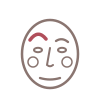

Eyebrow Isolation
One brow at a time
How to
Try to raise just one eyebrow while keeping the other still, then switch sides. If one side won't move independently at first, rest a finger on the still side to help hold it down.
Benefits
- Builds finer control over each side of the forehead separately
- Highlights asymmetry between the two sides, which is normal and worth knowing about
- A genuinely harder coordination challenge than it sounds
Practice
5-8 lifts per side, resting between sides rather than rushing straight through.

Get the Mukha appFree, no ads, works offline
Google Play
General information, not medical advice. If you have a health condition or pain, talk to a doctor or qualified teacher first.